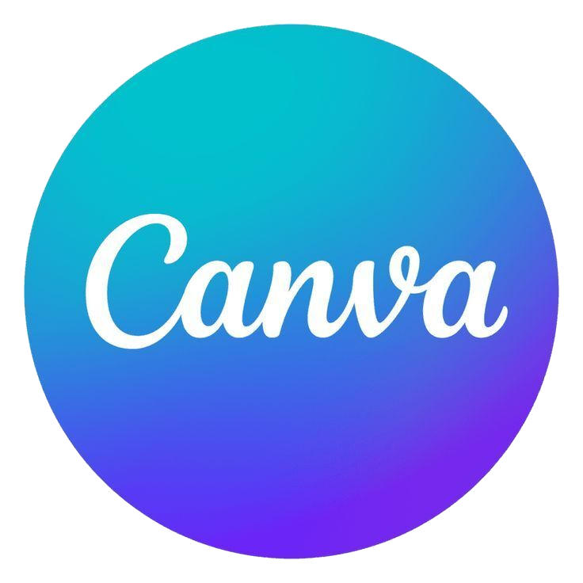
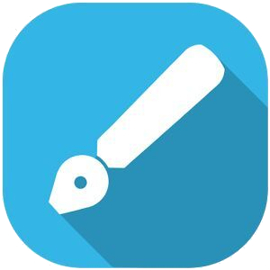
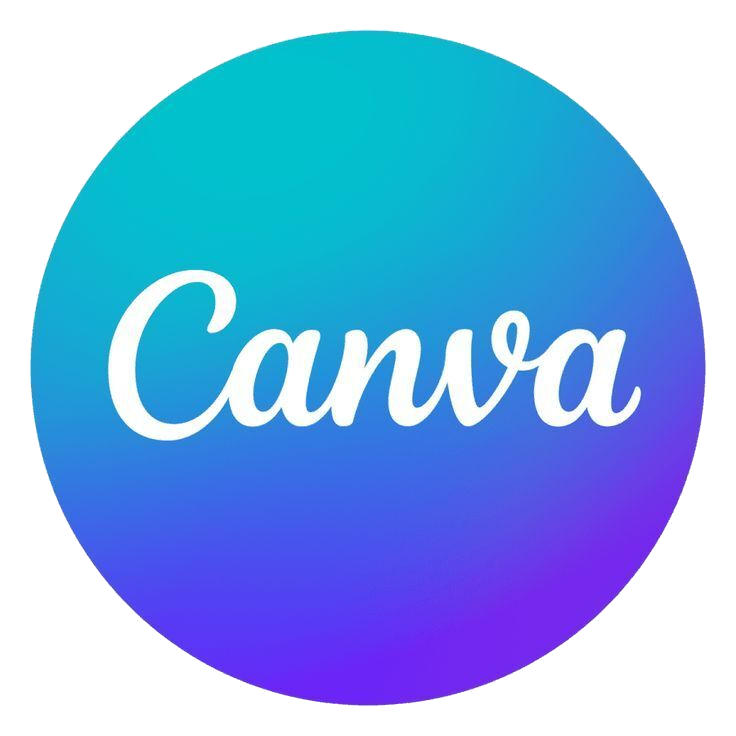
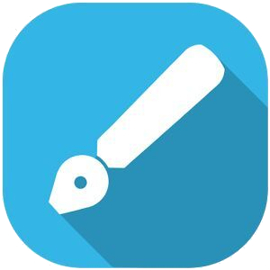
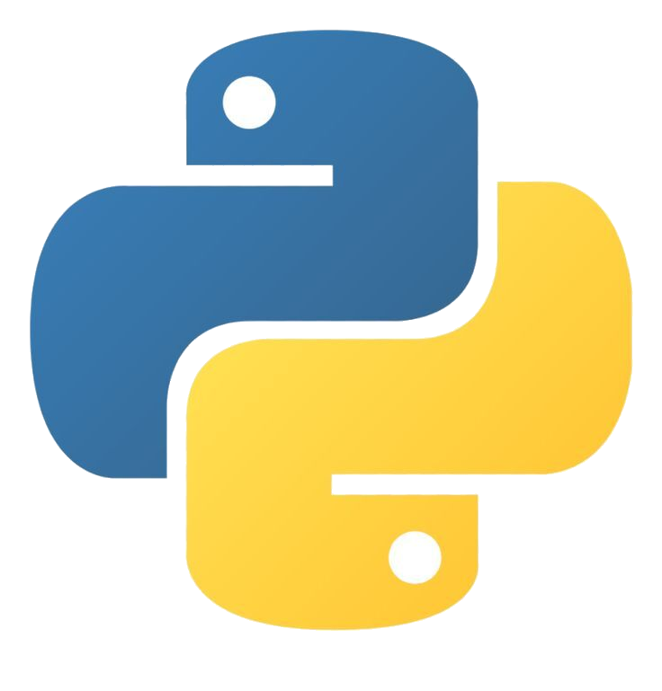
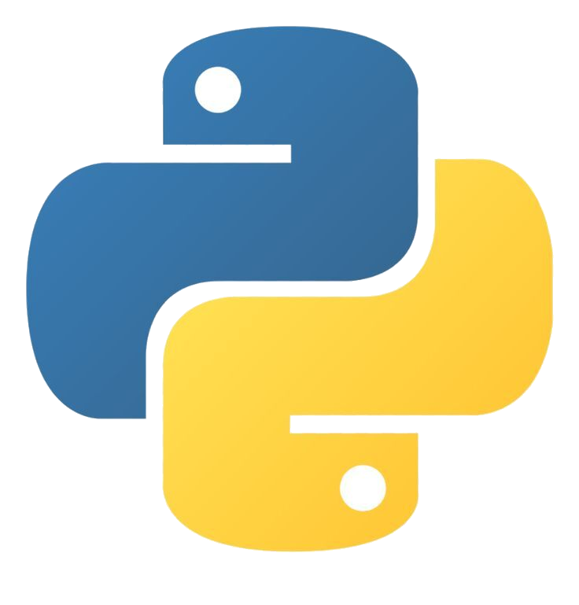
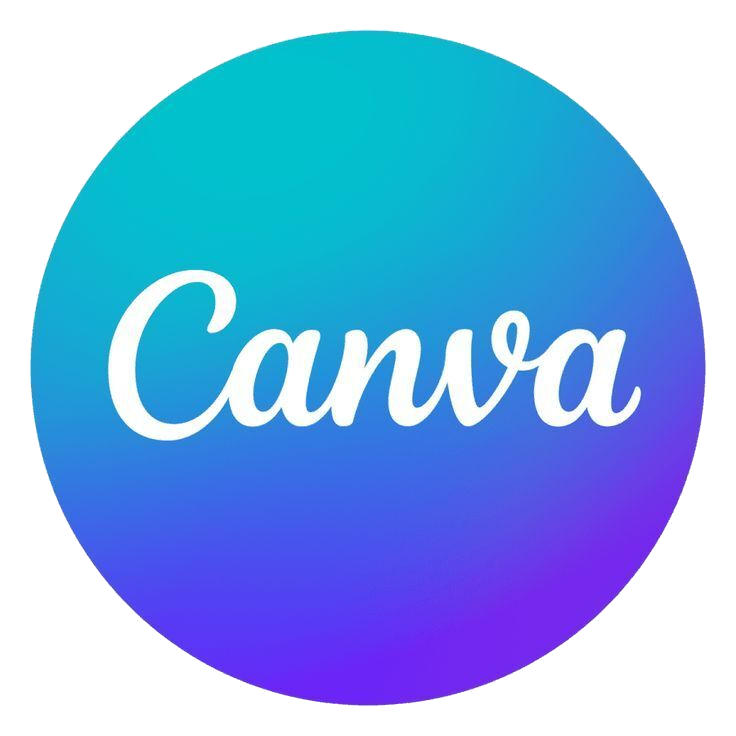
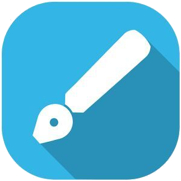
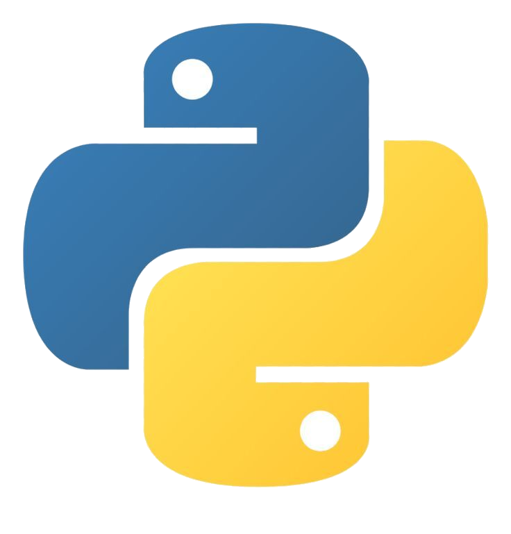

 

Saya Laudy Ilham Fahrizal, seorang siswa kelas XI di SMKN 1 Singgahan, jurusan Desain Komunikasi Visual. Saya berasal dari Tawun, Kumpulrejo, Bangilan,Tuban.
Saya memiliki keahlian di bidang desain grafis, khususnya menggunakan CorelDRAW, serta beberapa aplikasi desain berbasis Android seperti Canva dan Infinite Design. Selain itu,saya juga tertarik dan cukup mahir dalam Fotografi dan Videografi dengan software editing Photoshop dan Premier pro.
Belakangan ini, saya mulai mendalami dunia pemrograman karena ketertarikan saya pada teknologi sejak lama. Saat ini, saya sedang fokus mengembangkan kemampuan sebagai Front-End Developer, dengan mempelajari HTML, CSS, dan JavaScript.Ini proyek pertama saya dikerjakan menggunakan Code Studio dan Acode, dua code editor yang saya gunakan di perangkat Android.
Selain itu, saya juga mulai mempelajari Python dasar untuk memperluas kemampuan saya di bidang coding dan pengembangan teknologi.Saya berkomitmen untuk terus belajar,berkreasi,dan mengasah kemampuan saya di bidang desain visual dan teknologi digital.


